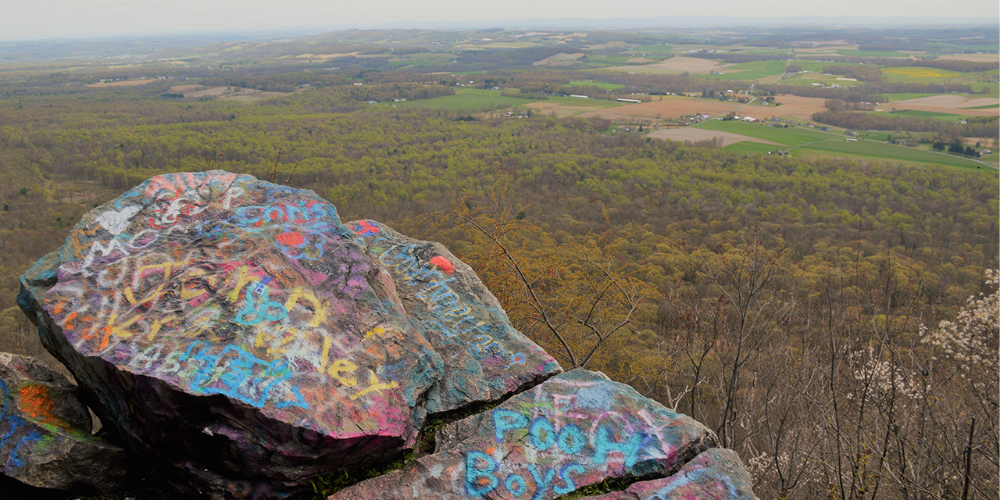
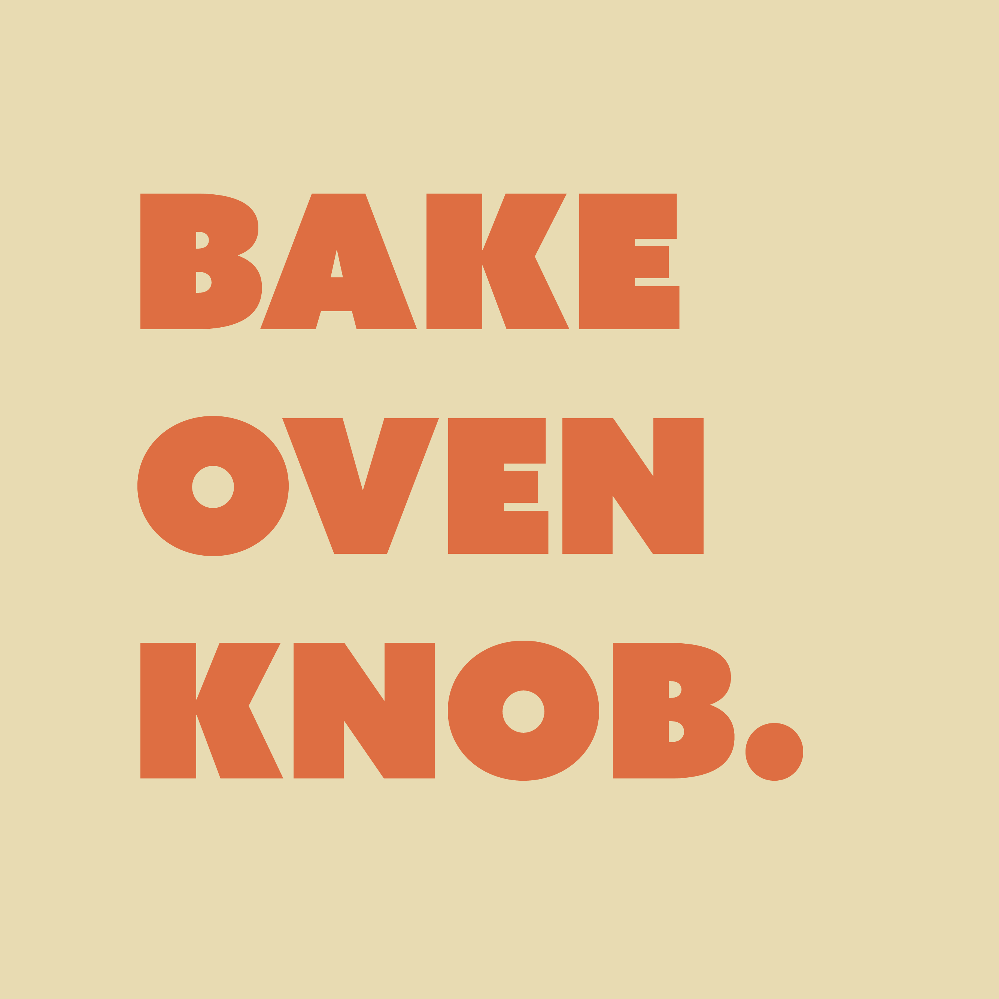
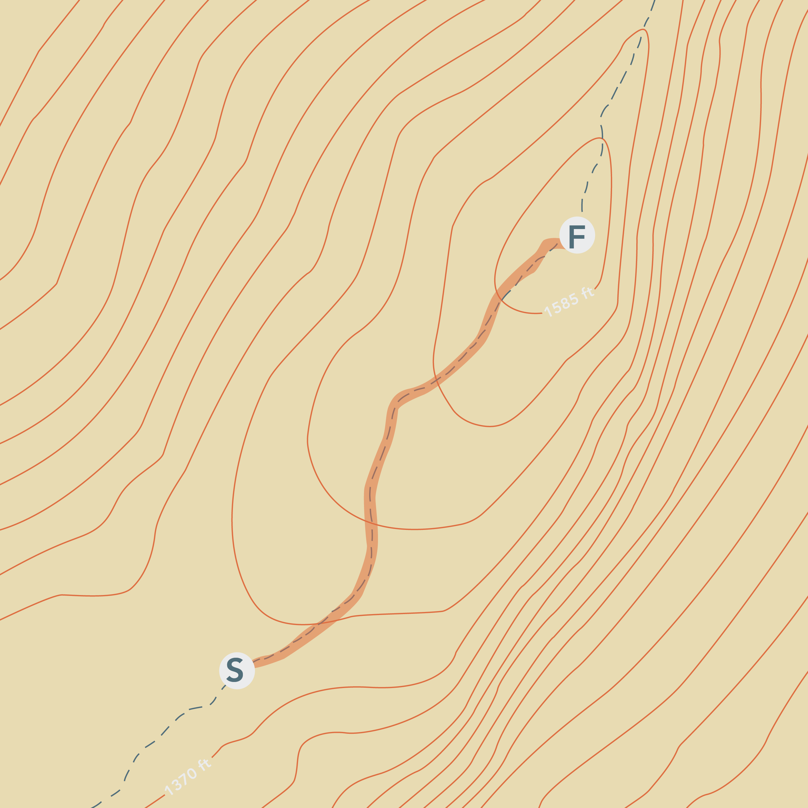
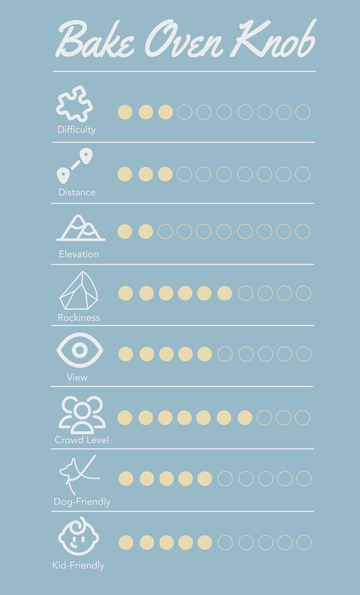
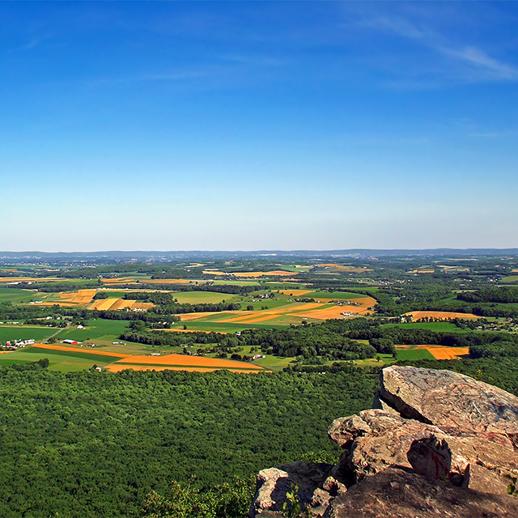
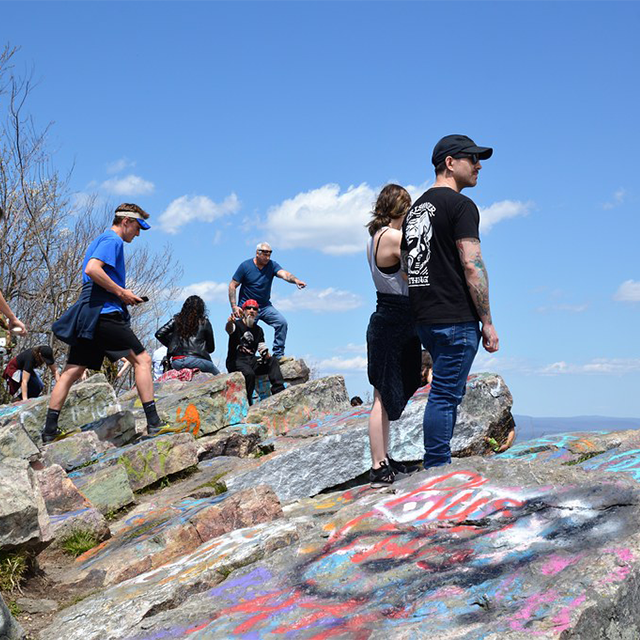
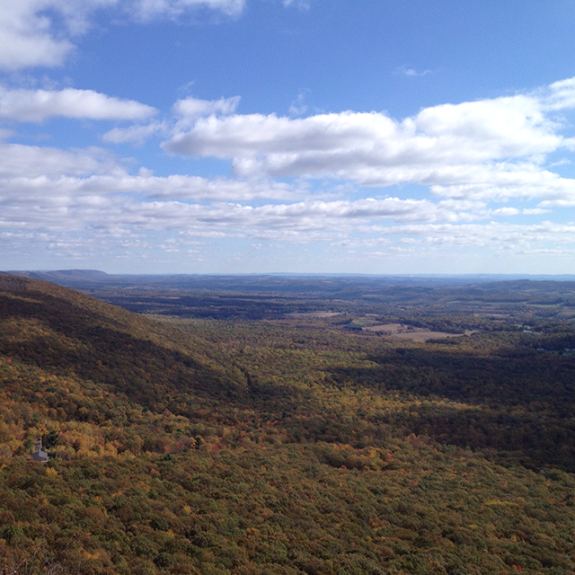

The knob has a visibility point of 10 miles!




SHUT THE DOOR.
GO OUTSIDE.
Nestled on the Appalachian Trail, Bake Oven Knob is a perfect hike for a beginning hiker looking for a quick, easy trail with a spectacular lookout. The peak has become known for its paint-covered rocks. Bake Oven Knob is the tallest point in both the Lehigh and Carbon counties, reaching a peak of 1500 feet, with a narrow paved road leading you up close to the top of the mountain. If hiking from the parking lot, be prepared for a 0.4 mile hike towards the turnaround point. You should be able to reach the main lookout within 15 minutes, which adds up to a 30 minute round-trip. This hike starts off easy, but towards the middle be prepared for some climbing. Some portions of the trail can get quite rocky, so come prepared with solid footwear. At the end of the hike, you’ll be greeted by fantastic views of the Blue Mountain Ridge, as well as an expansive view of the area’s farmland. Many hikers travel here for hawk and eagle watching, but the trail has also become popular with graffiti artists.
Bake Oven Knob is located about 30 minutes northwest of Allentown and 90 minutes outside of Philadelphia. The address for the main parking lot can be found by searching Bake Oven Knob, Appalachian National Scenic Trail, Germansville, PA 18053. The drive up to the parking lot is quite steep and is not recommended for small cars in the winter and spring months.


Be on the lookout for grafitti that decorates the rocks.

Enjoy the lookout, but don't get too close to the edge!